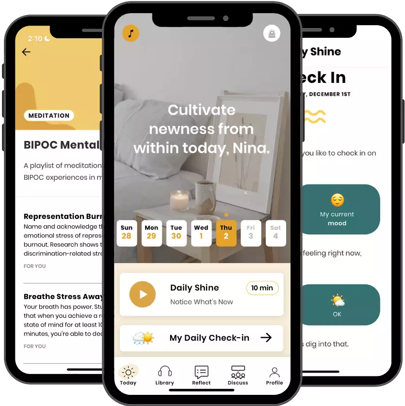

We created Shine for all of us.
We’re on a mission to make caring for your mental and emotional health easier, more representative, and more inclusive—of all of our experiences.
We started Shine because we didn’t see ourselves—a Black woman and a half-Japanese woman—and our experiences represented in mainstream “wellness.” Our bodies, our skin color, our financial access, our past traumas—it all often felt otherized.
We met as coworkers, and the support we found in each other changed everything . We knew we had to help more people cope, process, and heal on a daily basis in a way that worked for them.
That’s what we hope Shine does for you.
We hope it’s your inclusive self-care toolkit to help you deal with the day-to-day highs and lows, and, with time, find healing that will last you a lifetime.
You got this,
Our team
In our office (and over Zoom): “I love you” isn’t strange to hear. We’re driven by our individual values and passions. As a team that’s 80% BIPOC, we’re proud of the diverse range of experiences, identities, and skills we all bring to this company.
Our values
We’re fueled by our frustration.
Our desire to disrupt the pricey, preachy, and privileged world of wellness is what gets us out of bed each morning.
We own it.
We don’t take our power to make a difference lightly. We're proud when we get it right and we're humbled by our learnings. Whether it's a high or a low—we own it.
We Go Big and Go Home
We practice sustainable ambition, amplifying our impact while taking care of ourselves along the way.
We keep it 100.
A 50-50 relationship means one of us can't have an off day. We live by the 100-100 principle and meet our members and teammates all the way, with proactive support and empathy.
We find a way
We lead with solutions. We greet challenges as creative opportunities and trust our resilience to carry us through.

We believe that fighting for the mental health of marginalized groups helps fight for their lives and rights—and it’s one of the most important ways to improve the global landscape of mental health.
- Women globally are affected to a greater extent by depression, anxiety, and psychological distress than men
- Black adults in the U.S. are more likely to report persistent psychological distress than white adults
- Lesbian, gay, and bisexual adults are 2x as likely to have a mental health condition as heterosexual adults
- Transgender individuals are nearly 4x as likely to experience a mental health condition as cisgender individuals
- Only 1 in 3 Black adults in the U.S. who need mental health care will receive it
- Only 33% of Latino adults with a mental illness are likely to get treatment
- Asian American adults are 3x less likely than white adults to seek treatment for mental health conditions
- In 2015, 86% of psychologists in the U.S. were white, while only 5% were Asian, 5% Hispanic, 4% Black, and 1% multiracial
Sources: World Health Organisation National Alliance on Mental Illness American psychological Association Anxiety and Depression Association of America
Black Lives Matter
Shine is committed to fighting for Black lives and Black mental health. As a team that identifies as 30% Black, 80% BIPOC, and 100% antiracist—this isn’t a one-time campaign for us. It’s a lifelong commitment to stand with you and fight against racial injustice.
Support mental health in the workplace
Bring daily, culturally competent support to your organization with Shine at Work—your employee wellbeing program based on Shine’s award-winning app.
Learn More About Shine at Work The Shine app is your support system for daily stress and anxiety.
Prioritizing your mental health starts here. Learn a new self-care strategy every day, get support from a diverse community, and explore an audio library of over 800+ original meditations, bedtime stories, and calming sounds to help you shift your mindset or mood.